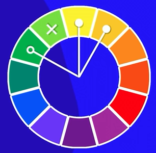
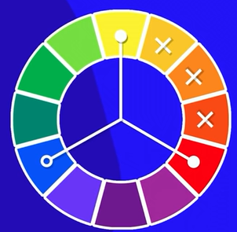

O círculo cromático é composto por 12 cores, as três primárias, as três secundárias e as seis terciárias.
Exemplo de círculo cromático:
A figura abaixo representa o circulo cromático com as cores nas quais podemos fazer combinações para criar uma harmônia entre as cores.
E para começar a falar sobre as cores do circulo cromático, vamos começar falando sobre as cores primárias, as cores primárias são formadas pelas cores: vermelho, amarelo e azul, assim como mostra a imagem abaixo:
Logo em seguida, nós temos as cores secundárias, que são formadas pelas cores: verde, laranja, violeta.
Já as cores terciárias, são formadas a partir da mistura entre as cores primárias e secundárias, toda cor terciaria está entre uma cor primária e secundária e a nomeação delas se dá pelo primeiro nome sendo o nome da cor primária e o segundo a cor secundária. Essa mistura resulta nas cores: amarelo-esverdeado, amarelo-alaranjado, vermelho-alaranjado entre outras mostradas na imagem abaixo.
Temperaturas de cores é um conjunto de cores que combinam mais com o frio ou com o calor, e por isso essas cores são chamadas de cores frias e quentes.
A paleta de cores é uma seleção de cores nas quais seram usadas no seu site, geralmente são usadas entre 3 e 5 cores no máximo na paleta de cores (desconsiderando o branco e preto que sempre estaram fazendo parte do seu site). Uma coisa importante de se lembrar também é que um site sempre tem uma cor predominante no ambiente, exemplo: caso você queira fazer um site de restaurante chique por exemplo, você procurará alguma cor que lembre algo chique, ou elegante, ou algo do tipo. Uma outra forma de decidir a paleta de cores é escolhendo a cor primária da logo da empresa do seu cliente
Cores Complementares são cores que tem mais contrastes entre si. Por exemplo, caso você queira saber qual é a cor que mais contrasta com o vermelho, então você vai olhar o circulo cromatico e vai ver qual a cor que fica no extremo oposto da cor vermelha, que nesse caso é o verde.
As cores análogas, ao contrario das cores complementares não tem contraste tão grande entre elas, porém elas ainda são percepitivies, como por exemplo a cor violeta, as cores analogas dela são as cores logo a sua direita e sua esquerda como mostra na imagem abaixo. Lembrando que o mesmo serve para qualquer outra cor, basta olhar a cor imediatamente a esquerda e direita da cor principal escolhida.
É possivel ainda combinar cores analogas com uma cor complementar, basta você escolher sua cor principal e visualizar as cores analogas e complementar da cor escolhida, exemplo: Laranja com suas analogas amarelo-alaranjado e vermelho-alaranjado e sua complementar azul.
Já no conceito de cores analogas relacionadas você pegará duas cores principais que são vizinhas, pulará uma casa (pode ser tanto pra esquerda quanto pra direita) no circulo cromático e completará a paleta com a próxima que vier, exemplo na imagem abaixo:
As cores triadicas são formadas por uma cor base (principal) e mais duas cores no intervalo de três casas entre o circulo cromatico, assim como mostra a imagem abaixo:
Diferentemente das cores triadicas, você escolherá uma cor base (principal) e mais três cores no intervalo de duas casas entre o circulo cromático, assim como mostra a imagem abaixo:
Para conseguir a cor tetrádica você precisa escolher duas cores principais (que lembrando, pode ser qualquer uma), e após escolher as suas duas cores principais você pegará as duas cores complementares as suas cores principais e formará sua paleta de cores, como mostra o exemplo abaixo:
A monocromia não faz uma mistura de cores, ela trabalha apenas com uma cor e modifica de duas propriedades dela que são: saturação e brilho

Existe alguns sites interessantes que servem para ajudar você a criar sua paleta de cores e até mesmo te dar inspiração para criar uma, os sites são: Color Adobe, Paletton e o Coolors.
Agora vamos ver como podemos capturar cores de sites que nos achamos bonitos. Primeiramente você deve instalar a extensão "Colorzilla", após adicionar a extensão, basta ir no site em que você deseja pegar determinada cor e ir na extensão para escolher a opção: "Page Color Picker", agora você pode ir na parte do site onde você deseja pegar a cor e clicar nela, automaticamente o número hexadecimal da cor será copiada para o colorzilla, de lá, basta colar no VSCode.